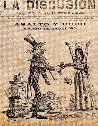
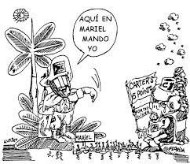
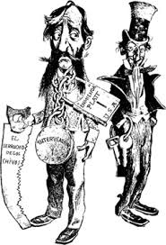

Panel que tuvo lugar durante la Feria Internacional del Libro en Camagüey, abril de 2016
René Fidel:
Quiero hacer una confesión en público, es la primera vez en mi vida que me tomo un kaptopril, lo hice esta mañana y
parece que me estoy estrenando. Esta mesa tiene algo de antikaptropil para muchas personas. Yo agradezco de entrada
a Mary y a Yoan el haberme invitado. Una definición de partida, creo que los Estados Unidos y Cuba comparten un
pasado, prolongado en el tiempo, pero no los mismos recuerdos, y en los últimos cincuenta años los recuerdos son
cada vez más separados. Lo otro es que no tengo ninguna preocupación con la presencia de la cultura norteamericana
en Cuba porque nunca nos ha hecho daño, por el contrario, la cultura norteamericana siempre ha impactado positivamente
en Cuba. Otra cosa es la cultura creada por los círculos de poder que es, desgraciadamente, la que más llega aquí. No
todos los jóvenes conocen a los mejores escritores cubanos, no todos nuestros escritores conocen a los mejores
escritores norteamericanos. La preocupación estaría allí: no hay que temer a la cultura norteamericana que siempre ha
sido una cultura rica, hermosa, poderosa, lo que hay que rechazar es lo otro, la vulgarización de la cultura, la
propuesta hedonista de la cultura que postulan los Estados Unidos en función de una visión global de la realidad
política.
Es curioso que la mesa aborde los desafíos de la cultura en este nuevo contexto de las relaciones con Estados Unidos,
y no nos pase por la cabeza que hay un aspecto de la cultura muy importante, y es la cultura política. Siempre hablamos
de cultura, cultura, cultura, y no vemos que la cultura política es parte de la cultura.
Yoan me dijo que iban a grabar la mesa en un tono medio KGB, y yo le dije que no había problema, estoy acostumbrado a
grabarme a mí mismo. Y Mary me dijo que iban a grabar con la idea de publicarlo después, tomé unas notas por las que
pienso guiarme. Voy a tratar de ser muy breve. Lo primero es asumir la cultura política como parte esencial de la
cultura cubana y apreciar la tremenda responsabilidad que tenemos como cubanos con esa cultura política. Yo creo que
está en el fondo de lo que se ha dicho aquí. La preocupación cultural en relación con la política, uno puede
preguntarse cuál ha sido nuestra cultura política. Y a riesgo de ser impreciso voy a tratar de precisar más esa
pregunta: en lugar de preguntar cuál ha sido la cultura política cubana, cuál ha sido el núcleo duro de la cultura
política cubana. Lo voy a decir de una forma tremebunda: la cultura política cubana no ha sido democrática, y no lo
ha sido porque estuvimos trescientos años bajo el dominio de un país que no ejercía la democracia en Cuba, y para
independizarnos, la población cubana tuvo que ser sometida a treinta años de guerra, los que fueron, por
responsabilidad nuestra, por intereses nuestros, pero también por la presencia norteamericana, desbancados y
defraudados, estableciéndose una república que era la negación de la República que sectores muy importantes del
país estaban soñando, eso nos costó dos revoluciones más y cuando apostamos a una última revolución, como solución
al cierre de las posibilidades democráticas, tuvimos que pasarnos el resto del tiempo peleando contra la potencia más
grande del mundo. Por eso insisto en que compartimos un pasado, pero no los mismos recuerdos.

En este último segmento histórico, que se inicia en 1959 y que todo parece indicar que va a durar mucho tiempo, el
contenido democrático fue una deuda, fue algo que se nos impidió. Desde mi perspectiva, los costos de la
agresividad de los Estados Unidos tenían una primera víctima propiciatoria, que no era la revolución, que no
era el desarrollo económico, era justamente el carácter democrático de la Revolución. Después tuvimos que
estar defendiendo al país de una agresividad que todos conocemos lo que condicionó en buena medida que los
niveles de democracia altísimos que se hubieran alcanzado como enseñar a leer y escribir a todo un país en menos
de un año, un ejemplo elemental de democracia, después de estas grandes realizaciones democráticas y hechas
democráticamente además, o al mismo tiempo en que se estaban haciendo estas realizaciones, fuimos obligados a
limitar sustancialmente la democracia política o mejor dicho, para afinarlo aún más, los alcances democráticos a
que se aspiraba y se aspira en Cuba. Ha sido una constante contradictoria dentro de la revolución, yo no quiero
referirme a lugares comunes, pero las tendencias totalitarias, las tendencias despóticas, las tendencias abusivas,
irrespetuosas a los derechos de la existencia del otro y de la opinión del otro que eran las que habíamos heredado
después de este proceso que trate de resumir muy brevemente, por muchos momentos y tiempos, no solamente pesaron en
la vida social y política del país, sino que eventualmente se incorporaron también como cultura política a nivel
social, entonces ahí tenemos una cuestión que es importante entender, asumiendo ese desafío, insisto la visión de
ese contenido democrático o esa capacidad de perfeccionar la democracia, como un contenido retardado y pospuesto
dentro de la revolución producto de esa agresividad. Eso desgraciadamente ha pesado dentro de nuestra cultura lo
suficiente y es un condicionante de muchos de nuestros actos. Yo asumo además que estas enormes contradicciones
que están dentro de la revolución en cuanto a los contenidos de la cultura política o que han marcado procesos,
momentos, circunstancias del individuo, se puede asumir además que ahora entrando en la zona de desafío y ya asumo
propiamente el tema, lidia con algo más, lidia con la comprensión de que Estados Unidos no ha tenido esa misma
experiencia. Ahora, uno puede preguntar: ¿existe o no una democracia en los Estados Unidos? Y uno puede responderse
con toda tranquilidad: sí existe una democracia en los Estados Unidos, Estados Unidos es una democracia y hay
contenido de cultura política democrática sumamente enraizado en la población, ahora, cuando decimos eso también hay
que hacer la acotación: esa no es la democracia que nos están vendiendo a nosotros, cuando yo digo que los Estados
Unidos tiene una cultura política enraizada en valores, prácticas democráticas, me estoy refiriendo a los Estados
Unidos que se han construido a despecho de su élite, allí están las luchas sociales de las obreras costureras, no de
hace sesenta años setenta años, sino de este siglo, allí están las luchas de los obreros de todas las ramas durante
siglos, aprendiendo a ser democráticos, todo eso en la más feroz de las represiones, poniendo ladrillo a ladrillo, no
importaba que el resultado no lo viese la generación que lo hacía, la siguiente lo iba a ver, el soporte de una
cultura política democrática trasmitida socialmente y uno puede acudir a los grandes hitos como solución de brevedad
y puede entender una última oleada muy importante que se ubica en la década del sesenta de reivindicación de los
derechos civiles de la población afroamericana, esa enorme lucha, ese perfil democrático logró enraizar una cultura
democrática en la población y en buena medida logró también construir no solamente una cultura política democrática
en la población, sino una estructura que soportara, a partir incluso del legado de sus fundadores, una sociedad
política democrática, incluso como episteme de esta expresión, las dos veces lo he dicho, a despecho de su élite.
Uno de los desafíos que tenemos delante es identificar esos dos contenidos o esas dos propuestas democráticas: la de
aquella sociedad que se ha construido democráticamente resolviendo buena parte de los conflictos que históricamente
ha tenido a través de luchas sociales y la otra propuesta, que es la democracia vacía, estereotipada que nos ofrece
justamente la élite. Yo creo que esta distinción nos lleva a algo que ha sido el horcón del pensamiento cubano: pensar,
el cubano hoy tiene el mismo desafío que Varela señaló hace muchísimo tiempo: no pensar en cajas de azúcar y sacos
de café. El cubano tiene que ocuparse en pensar, ese desgraciadamente o por suerte sigue siendo el desafío nuestro.
Habrá que ocuparse en pensar, pensar, pensar porque después de tanto tiempo estamos seguros que podemos seguir
construyendo el futuro. Si podemos decir que compartimos un pasado, pero no los mismos recuerdos, es por la comprensión
de que ese pasado en algún momento fue futuro. Yo soy optimista en ese futuro que podemos construir, pero ojalá que
cuando ese futuro se convierta en pasado, compartamos los mismos recuerdos.
Yoan Pico:
Quisiera hacer una pequeña acotación, René Fidel González decía que no tiene miedo de la presencia de la cultura
norteamericana porque nunca nos ha hecho daño. Decía también que la cultura norteamericana siempre había impactado
positivamente en Cuba. Yo sostengo completamente su criterio, pero me gustaría añadir que esa cultura también puede
servirnos para la lucha de pensamiento a la que estamos abocados con las actuales relaciones de normalización. Por
allí venía el término “enemigo” empleado en mi anterior intervención y al que Lionel hizo referencia. Me gustaría creer,
tal vez porque se ha ido parte de mi vida en ello, que estos cincuenta y tantos años, han generado un proyecto de
nación al que no debemos renunciar por completo, sobre todo en sus anhelos de no sujeción al proyecto norteamericano.
Pues bien, para esos anhelos, para los más puros, e incluso para los más torpemente nacionalistas, la cultura
estadounidense puede ser una profunda aliada. No exagero, revisemos las principales obras literarias de ese país a
partir de Walt Whitman para acá y encontraremos que sus autores son también los más grandes desencantados con el modelo
de sociedad. El desencanto y la disidencia con un país en el que “es imposible llevar una vida espiritual”, palabras de
J. D. Salinger, está en la médula de las grandes novelas de Jhon Steimbeck, Carson McCullers y Hemingway, para no
hablar de los grandes pensadores de esa cultura como Thoreau y Emerson. Por supuesto, nosotros somos tan inteligentes
y tan hábiles a la hora de construir nuestras estrategias de respuesta que nada de esto hemos aprovechado, incluso a la
hora de diseñar unos planes de estudio que mucho ganarían con un acercamiento a la cultura norteamericana y cuando digo
ganarían me refiero en todos los aspectos, incluido ese que nuestros pedagogos denominan la preparación política
ideológica de los estudiantes.

Caridad Atencio:
Escuchando a Rene Fidel quedé un poquito desconcertada porque sentí en sus palabras que él como quizás muchos de nosotros
somos jueces y víctimas al mismo tiempo y este es un tema que está muy caliente y es difícil tomar distancia para poder
ver nuestro propio accionar, nuestro propio modo de conducirnos. Uno puede apoyarse en historias de vida; sé que no es
el momento para ver este tipo de ejemplo, pero bueno me suscita decirlo: mi amiga más cercana —crecimos juntas y las dos
estudiamos Letras, ella en el Pedagógico yo lo estudié en la Universidad de la Habana— hizo una vida partidista,
fue militante de la Juventud, después del Partido pero hace un tiempo dio un giro tan fuerte que se hizo religiosa,
abandonó el carnet del partido, las hijas comenzaron a irse porque una se casó con el hijo de un preso político y ahora
mi amiga también decidió irse, o sea, es algo doloroso que nos toca a todos, a lo mejor no es tan doloroso para una
persona de otro país, pero como hemos vivido eso con todo lo que él ha dicho de la cultura política nos es muy difícil
ser juez y víctima.
María Antonia:
Me llama mucho la atención la manera muy ligera en la que a veces se refieren algunas personas, asentadas en una
posición supuestamente muy cultural, al uso que se le da a internet en Cuba en las zonas Wifi, las que como sabemos
son utilizadas fundamentalmente para la comunicación con los familiares en el exterior. Yo pienso que es deprimentísima
la manera en que el acceso a Internet se ha incrementado en zonas públicas, sin privacidad alguna ni las más mínimas
condiciones de confort, pero, bueno, eso es otro asunto. Sin embargo, a mí no se me olvida —y no puedo dejar de pensar
en mi madre esta tarde—, que cuando un hermano suyo se fue en el año 67 la sensación era casi como si esa persona
falleciera, pues las posibilidades de comunicación eran terribles. Las familias entonces crecían en paralelo, a veces
con muy poca comunicación. Porque crecí marcada por esas angustias, siento que es una actitud muy poco cultural
despreciar las posibilidades de comunicación que tenemos hoy en día y esa idea de familia que ha sobrevivido a pesar
de todo, eso es lo único que me hace ser optimista respecto al futuro de Cuba en este acercamiento.
Hay algo que me preocupa muchísimo y que tiene ya que ver con nosotros. Marcelo Pogolotti, en La república de Cuba
a través de sus escritores, se refiere a la revista Social y a la generación de los años 20. Habla de la
existencia de una suerte de aristocracia en Cuba que tenía entre sus valores más importantes ser culto o al menos
simularlo. Recordemos que la revista Social tenía como uno de sus corresponsales en París a Alejo Carpentier. Muchas
de las crónicas que hoy leemos de Alejo Carpentier fueron encargadas y pagadas por la revista Social que se preocupó
por constituirse en una plataforma de acceso y de diálogo con lo que se consideraba en esos momentos lo más avanzado de
la cultura artística y del pensamiento en la época. ¿Y qué pasa hoy en Cuba? Esa es la pregunta, eso es lo que más me
preocupa sobre todo cuando visito la Habana porque a veces tenemos la idea de que el País funciona homogéneamente, existe
una unidad nacional por supuesto, pero siento que en Cuba se están viviendo tempos y procesos muy diferentes en sus
distintas zonas, con este surgimiento —llamémosle sin miedo, porque si no no somos marxistas— de una nueva clase.
¿Cuáles son sus patrones de comportamiento?, ¿cuál es la idea de éxito del hombre y la mujer hoy en día en Cuba?,
¿hacia dónde va a estar mirando o está mirando esa burguesía que está surgiendo? Esa son de las cosas que tienen que
ver con nuestras reservas morales, con el propio cansancio de la resistencia, teníamos unas reservas en los noventa
que a pesar de la miseria nos hicieron vivir y asumir la cultura de otra manera. Como ven, tengo más dudas e
interrogantes que respuestas. Y dentro de todo eso quedaría por precisar la misión de los intelectuales. ¿Hasta qué
punto los analistas que deciden algo en el país leen o no a Martí?, como decían ahorita. Yo me pregunto incluso si
esos analistas, los analistas oficiales, realmente deciden algo en el país, si son escuchados, si son tenidos en cuenta
o tienen que ver con estos fenómenos de los que hablaba René Fidel. Yo siento que es un panorama muy complejo y
complejo por estas mismas asimetrías internas que tiene Cuba hoy en día.

Lionel Valdivia:
Yo solamente quiero apuntar lo duro que es ser una víctima asimétrica, eso redobla todavía más el dolor. Lo que pasa
es que los tiempos van cambiando, los tiempos cambian de una manera tremenda, por acá lo decían, no estamos en el
mismo momento y al mismo tiempo todos nos hemos convertido en víctimas y tenemos esa sensación por dos partes, las
dos piedras nos han machacado una y otra vez y hay un afán en las personas de minimizar la importancia de la cultura
porque también hoy nos estamos autoengañando, podemos decir incluso que esta mesa es un gran engaño porque hoy la
cultura nos importa a nosotros, estamos enarbolando la cultura pero la cultura que hemos ido atesorando para nosotros
y que hoy nos cuesta trabajo trasmitírsela a nuestros hijos, a nuestros hijos, las personas que tenemos en nuestras
casas, con las que conversamos día a día. Entonces eso también es el reflejo de nuestra condición de víctimas y por
eso yo aunque por acá digan y por allá y sí, tengo una visión caústica y es que tengo una sola cosa para salvarme en
la vida y es la poesía y me he dado cuenta de que no sirve para nada, entonces al tener la poesía para salvarme y darme
cuenta de que no sirve para nada más allá de para mí mismo, me salva a mí, pero me salva para adentro, no para afuera.
Emilio Cueto:Golondrina no lo ves en la tumba del poeta no hay un sauce ni un ciprés, pero eso es desde siempre.
Caridad Atencio:
Hay veces que la verdad uno no la escucha en su familia ni en sus conciudadanos, sino de otra gente que han vivido en
ese seno, en ese seno norteamericano y lo pude sentir así leyendo un poema de Charles Bukowski que es un escritor que
muchos de los que estamos aquí conocemos, un inmigrante alemán en los Estados Unidos. él tiene un poema que dice que
la familia de al lado de su casa se levanta a las seis de la mañana y se sienten risas y murmullos y después esa
familia parte para el trabajo, la casa queda vacía, la familia de al lado de su casa a las nueve de la noche regresa
hace rápidamente la comida y se acuesta para descansar y así todos los días y así todos los años y así hasta que se
les va la vida. Esa es la vida en los Estados Unidos, la vida se te va trabajando y trabajando para el que tiene
dinero, pero también está la visión de la cultura que nosotros tenemos, tan válida como el que quiere irse y estar
trabajando doce horas, esa es su elección, ahora la mía no es esa, yo estuve en ese país y no me gustó, estuve treinta
y cuatro días y estaba deseosa de regresar porque me parecía que me había ido por el inodoro hacia adentro, hacia un
lugar que no estaba en el planeta tierra donde la gente lo único que le preocupaba era el fin de semana tener veinte
litros de gasolina en el carro e ir hacia alguna parte, esa es mi opinión.